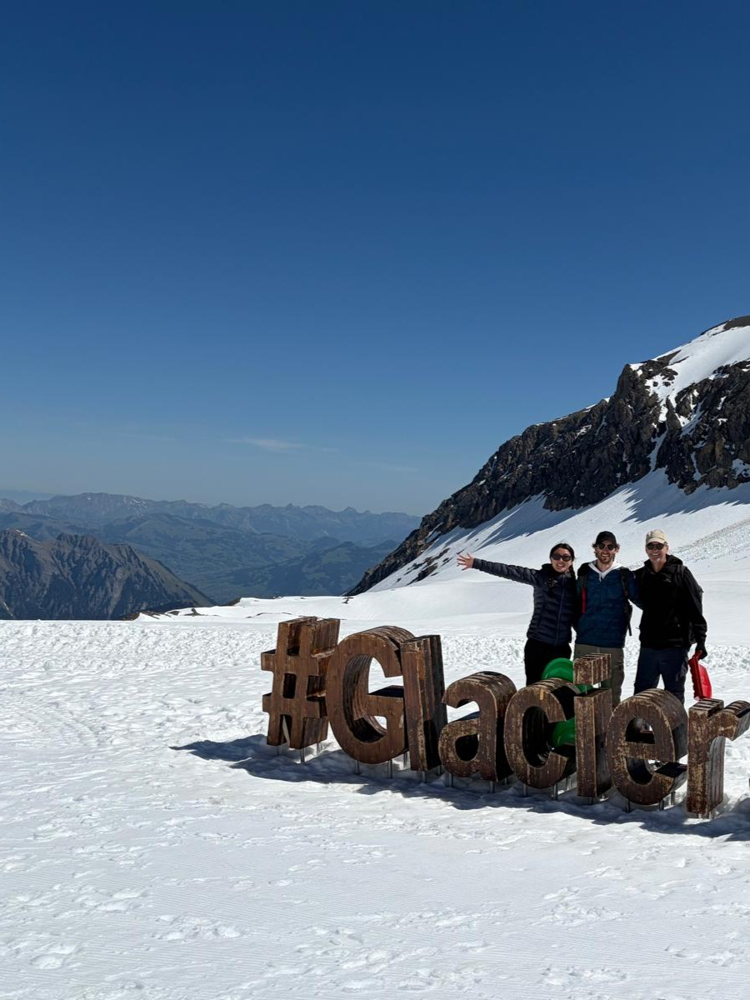
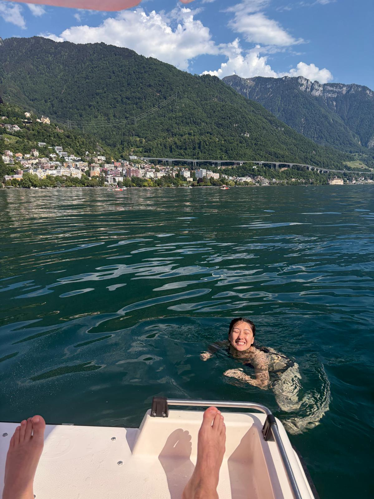

← Travel
Montreux 2026
We finally met up with Dad and Bettina on a lovely lake town surrounded by mountains.

24th May 2026
We started out in Montreux by heading to the mountains! We got on a complicated network of trains and trams to make it to the cable car which would take us to Glacier 3000. The views of the alps were spectacular and I realised just how many more mountains there were! We crossed a treacherous bridge and fumbled our way down the snowy/icy paths. They even had some taboggans which we tried! On the way back up to the cable car we struggled for footing and ended up flat on our faces more times then we cared to admit. In the afternoon we switched up the snow for sun. We headed down to the lake for q uick dip in the water. The water was FREEZING and we were caught out by one larger than normal wave but it was super refreshing and the perfect air temperature for it.

25th May 2026
Sophie and I decided to get the steeeeeep train up one of the mountains to do a hike. The train was driven by cog wheels on a track and although it moved very slowly, the views were breathtaking. We started this beautiful hike and saw fields of green almost everywhere we went. Before making it to the top we stopped at an unusually shaped plateau and realised before long that people where jumping off the plateau! They had paragliders and we could see them soaring down to the lake! We headed back down and decided to make the most of our proximity to the lake by hiring a pedal boat. It was suprisingly fast and the heat of the day made it really nice to dip in and out of the water on our own accord. We saw the cutest dog on a paddleboard!